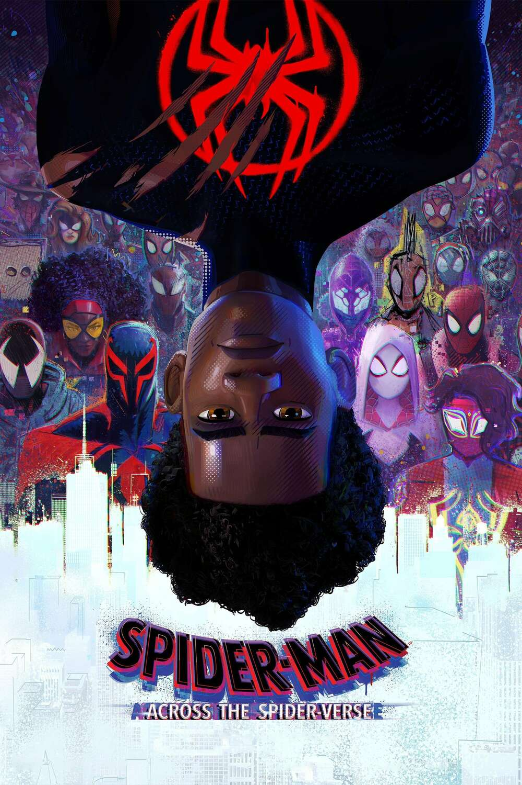
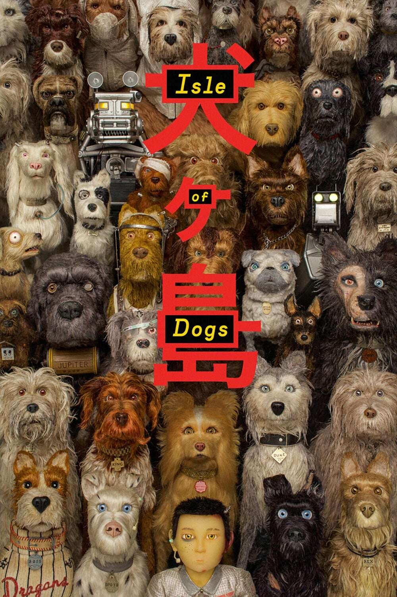

Top 5 Filmes de Animação Favoritos
Esta página apresenta meus filmes de animação favoritos, com imagens, trailers e sinopses detalhadas. Explore a lista e descubra mais sobre cada título.
1. Ponyo

Sinopse e trailer
Sosuke encontra uma peixinha dourada mágica chamada Ponyo. Ao tentar se tornar humana, Ponyo desequilibra os mundos humano e marinho, levando a uma aventura para restaurar a harmonia.
2. Homem-Aranha: Através do Aranhaverso
Sinopse e trailer
O filme segue a jornada de Miles Morales, um adolescente que se torna o Homem-Aranha em um multiverso repleto de outras versões do herói.
3. Ratatouille

Sinopse e trailer
Remy (Patton Oswalt) é um rato que sonha em se tornar um grande chef de cozinha em Paris. Ele forma uma parceria improvável com Linguini (Lou Romano), um jovem cozinheiro, para criar pratos deliciosos.
4. Ilha dos cachorros
Sinopse e trailer
Em um futuro distópico, todos os cães são exilados para uma ilha, onde um garoto embarca em uma jornada para resgatar seu melhor amigo.
5. Robô Selvagem

Sinopse e trailer
Um robô solitário embarca em uma jornada para encontrar seu lugar em um mundo pós-apocalíptico, onde a natureza recuperou seu espaço.
📊 Comparativo dos filmes
| Título | Ano | Diretor | Gênero |
|---|---|---|---|
| Ponyo | 2008 | Hayao Miyazaki | Animação |
| Homem-Aranha: Através do Aranhaverso | 2024 | Joaquim Dos Santos | Animação |
| Ratatouille | 2007 | Brad Bird | Animação |
| Ilha dos Cachorros | 2018 | Wes Anderson | Animação |
| Robô Selvagem | 2024 | Chris Sanders | Animação |